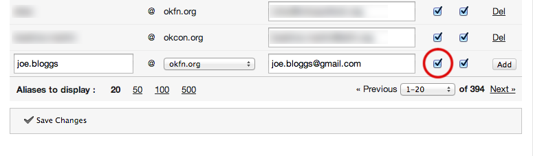
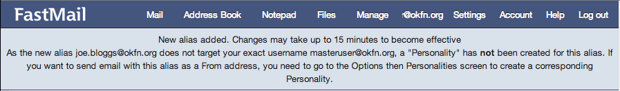

This document contains a description of how to manage our large set of email domains and aliases. Members of the coordination team (management + unit heads), as well as the sysadmin team, can edit aliases through the interface at FastMail, our front-line email provider.
Visit the FastMail Virtual Domains configuration page (log in from LastPass)
Fill out the form as shown below. For this example, we are adding an alias so that joe.bloggs@gmail.com receives mail sent to joe.bloggs@okfn.org. Please ensure that the penultimate checkbox (“SRS”) is checked as shown below.
When you’re done click the “Add” button. You should see a confirmation like the following at the top of the page:
If the domain you wish to receive email at is not in the dropdown list, please submit your request to sysadmin@okfn.org.